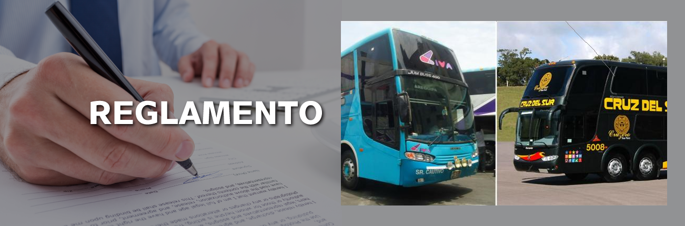
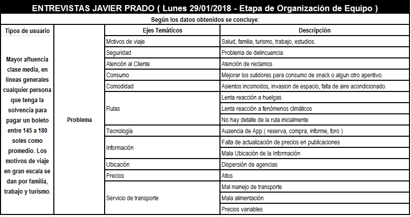

Investigación de grupos
Grupo "A"-Terminal Javier Prado
1ero:
Tener a la mano preguntas de entrevistas, las preguntas son cualitativas abiertas, con la finalidad de conocer de forma mas detallada la experiencia de usuario.

2do:
Herramientas de diseño, principales Lápiz, papel y celular
3ero:
Normatividad de Empresa de transportes
Agencias de Transporte ExcluCiva, Cruz del sur y Tepsa
Observación de Contexto
Observar el contexto, nos proporciona una idea de como se desarrolla el dìa a dìa dentro de la empresa de transportes, ademàs se siente la molestia de los usuarios, por la espera al momento de su embarque, falta de asientos, colas al esperar informes, existen 3 cajas de atenciòn al cliente pero solo funcionaba una, y el calor, mientras que en la otra agencia estaba caso vacio.
Mediante este primer metodo que es la observaciòn, podemos concluir que ambas agencias tienen personal frecuente, cuyo motivo de eleccion de agencia varia entre seguridad y comodidad vs precio, ademàs del tiempo de antiguedad de cada una.

4to:
Resumen de plan de ACCIÒN-GRUPO A
| Hora | Actividad | |
|---|---|---|
| 08:30.a.11:05.a.m | Entrevista agencia Cruz del Sur | |
| 11:20-12:05 a.m | Entrevista agencia Exclusiva | |
| 12:20-01:00 p.m | Entrevista agencia Movil Tours | |
| 01:05-02:00 p.m | Camino a lugar de reunion para realizar retrospectica, y analisis de las entrevistas. | |
| 02:05-03:30 p.m | Break, y conclusiones acerca de la experiencia obtenida. | |
| 03:40-5:40 p.m | En transporte. | |
| 07:00-11:00 p.m | Cada una de las personas encargadas de las entrevistas, debe de pasar en limpio toda la informacion recolectada para su analisis a profundidad, lugar de concentraciòn de informaciòn GOOGLE DRIVE. |
5to:
Conclusiones
